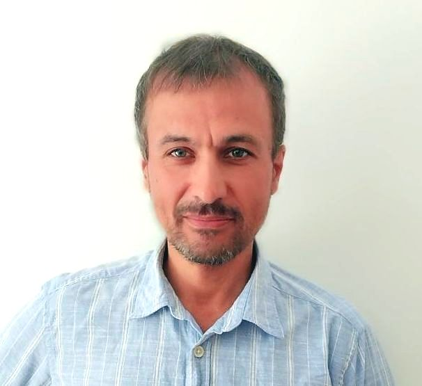

|
Andrei Osetrov

|
Skills
-
At the moment I am studying at the University of
Montenegro
(UCG) for a back-end
developer.
-
I have finished the course “Introduction to programming, Python” at the UCG and have
writed two small pet projects on Python.
-
Through SSH I am able to set up remote Linux VPS (for example, AWS t2.micro) with
Docker compose, Selenoid, Jenkins. Two of my pet projects now are running on the AWS
server.
- Using Gradle and Selenide library with Allure report I can write UI auto tests on Java (IDE
IntelliJ IDEA community ed.). Reports can be sended to Telegram or Slack by a Jenkins
task.
- I have a basic knowledge of how to write REST API tests on Java using RestAssured and
Lombok for API testing.
- I used SQL within my projects with relational databases: Firebird (Interbase) and MySQL.
Also I have used non-relational mongoDB with Python in one of my pet projects.
- I love Linux and can use sources, can change them and build under Linux.
- On C I can write embedded programs for some AVR and STM lines of Microprocessors.
- I am familiar with Qt application development for Windows and Linux.
|
Languages
- Russian: native.
- English: fluent technical reading, intermediate language speaker (A2).
- Montenegrin: in process.
|
|
|
|
Experience in programming
- 2022. I’ve made a flat rent
scraper
and a job seeker bot on Python.
- 2022. I have written several UI autotests
on
Java
for site Unidragon using Selenide,
Allure report and notification to Telegram by using Jenkins tasks.
- 2021. I’ve created the program "Context" to analyze the effectiveness of Yandex Direct,
GoogleAds advertising campaigns. For this program I used the Qt with C++ and a
MySQL database.
- 2017-2020. Several versions of the clay soil moisture sensor were produced by myself.
From PCBs designed in Pcb-rnd to purchase components in China. From solder
components to write code on C, program controllers and test them.
- 2015-2020. I’ve made some small automation programs on C (and several parts on
assembler) for AVR atmega328p and STMicroelectronics STM32F3 microcontrollers using
NetBeans IDE and a plugin for C / C++. Examples: to control the lighting in the growing
boxes, to control the lighting and the temperature inside a poultry house.
|